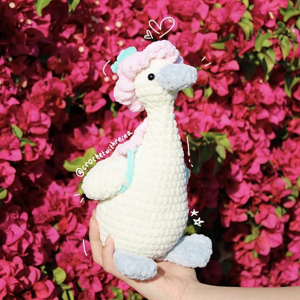
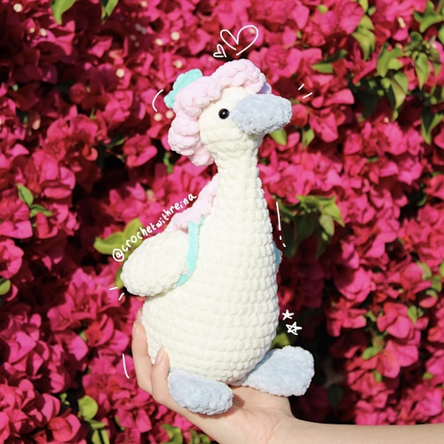
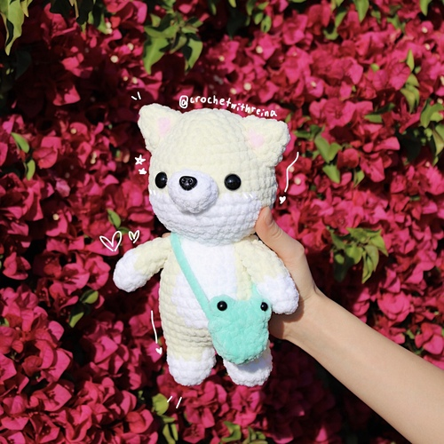
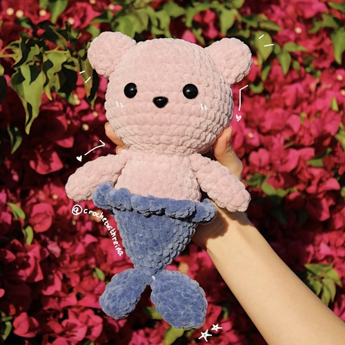
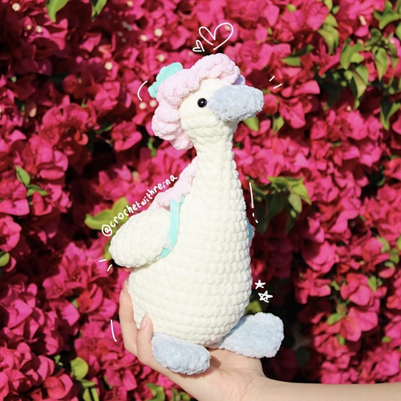
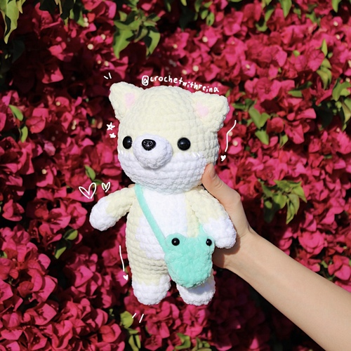
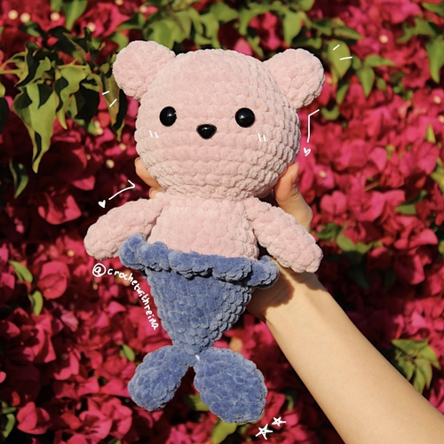

Reina Jung
Growing up with Japanese and Korean parents as a first-generation immigrant has been a unique and enriching experience. From an early age, I was exposed to two distinct cultures, each with its own language, traditions, and customs. Although navigating two cultures could be challenging at times, it has also given me a unique perspective and a greater appreciation for diversity. One of the biggest advantages of growing up bilingual has been the ability to communicate with a wider range of people. Being fluent in both Japanese and Korean has allowed me to connect with my extended family and form relationships with individuals from both countries. It has also opened up opportunities for me in my professional life, such as being able to work with clients who speak these languages. Moreover, being bilingual has helped me to develop better cognitive skills, such as multitasking, problem-solving, and creativity. It has also given me the ability to think outside of the box and approach situations from different perspectives. Overall, being bilingual has enriched my life in countless ways, and I am grateful for the experiences and opportunities that being fluent in multiple languages has provided me.
As a bilingual individual fluent in Japanese and English, I have been able to utilize my language skills to assist companies looking to expand their outreach to Japan. One of the ways I have been able to help is by translating important documents such as marketing materials, product descriptions, and user manuals, into Japanese. This has allowed companies to effectively communicate with their Japanese audience and expand their reach in the Japanese market. My ability to translate documents accurately and efficiently has helped companies to establish their brand in Japan and gain a foothold in a new market. I am able to ensure that the translated documents are not only accurate, but also culturally appropriate, taking into account important nuances and cultural differences that are essential to effectively communicating with a Japanese audience. Overall, my bilingual abilities have been a valuable asset in helping companies to expand their global reach, and I take pride in being able to bridge the gap between cultures through effective communication.
As a creative individual, I have always enjoyed exploring different forms of art and expression. One of the ways I have been able to channel my creativity is through crochet. I have honed my crochet skills over the years, and I have now taken the step to turn my passion into a business. Through my crochet business, I sell a variety of handmade items, including blankets, hats, and scarves, each crafted with care and attention to detail. In addition to selling my handmade creations, I also offer crochet patterns for sale. These patterns allow others to create their own unique crochet items, and I enjoy sharing my skills and knowledge with others who share my passion for crochet. I have found that my creativity has been a driving force in the success of my crochet business. My ability to come up with new and unique designs sets me apart from others in the market, and my attention to detail ensures that each item I create is of the highest quality. Overall, I am grateful for the opportunity to turn my passion into a successful business, and I look forward to continuing to share my love of crochet with others through my handmade creations and patterns.
Experience
Developer
• Developed websites for CrochetWithReina
• Dveloped social media and promoted the crochet business
• Experience with HTML, CSS, Javascript, Photoshop
Translator
• Used bilingual skills to translate documents
• Marketing materials, product descriptions, media advisories, and user manuals
Tutor
• Offered classes to business men and women who wanted to learn Japanese
• Taught basics as well as more advanced levels
• Created educational content to help students
• Created engaging and fun ways for students to learn
Education
UC Riverside
Portfolio
 



 